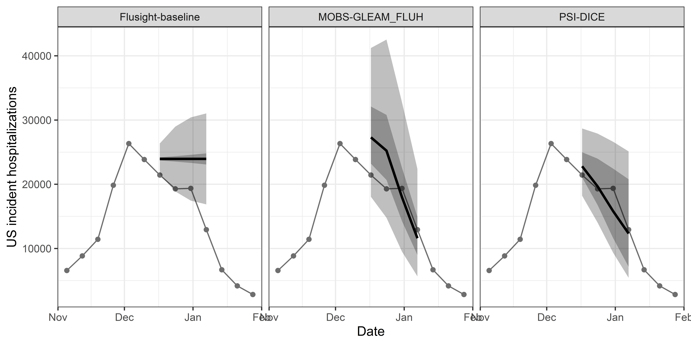
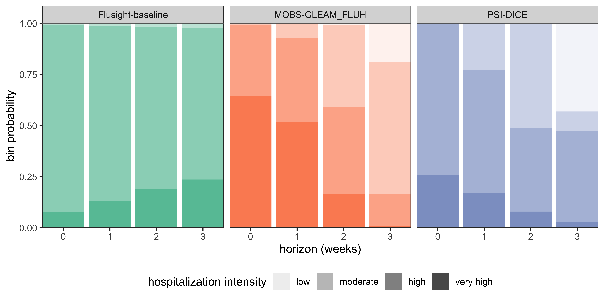

| model_id | target | location | reference_date | horizon | output_type | output_type_id | value |
|---|---|---|---|---|---|---|---|
| UMass-trends_ensemble | wk ahead inc flu hosp | US | 2023-05-15 | 1 | quantile | 0.01 | 766 |
| UMass-trends_ensemble | wk ahead inc flu hosp | US | 2023-05-15 | 1 | quantile | 0.10 | 850 |
| UMass-trends_ensemble | wk ahead inc flu hosp | US | 2023-05-15 | 1 | quantile | 0.25 | 913 |
| UMass-trends_ensemble | wk ahead inc flu hosp | US | 2023-05-15 | 1 | quantile | 0.50 | 1010 |
| UMass-trends_ensemble | wk ahead inc flu hosp | US | 2023-05-15 | 1 | quantile | 0.75 | 1077 |
| UMass-trends_ensemble | wk ahead inc flu hosp | US | 2023-05-15 | 1 | quantile | 0.90 | 1153 |
| UMass-trends_ensemble | wk ahead inc flu hosp | US | 2023-05-15 | 1 | quantile | 0.99 | 1281 |
hubEnsembles: Ensembling Methods in R
Emily Howerton ![]()
Lucie Contamin
Harry Hochheiser
Anna Krystalli
Nicholas G. Reich
Evan L. Ray
Abstract
Given the demonstrated performance improvements of multi-model ensembles, combining predictions from multiple models is a common practice across many fields. The R package hubEnsembles provides a flexible framework for ensembling various types of predictions, including point estimates and probabilistic predictions. A range of common methods for generating ensembles are supported, including weighted averages, quantile averages, and linear pools. The hubEnsembles package fits within a broader framework of open-source software and data tools called the “hubverse”, which facilitates the development and management of collaborative modelling exercises.
Keywords
multiple models; aggregation; forecast; prediction
Introduction
Predictions of future outcomes are essential to planning and decision making, yet generating reliable predictions of the future is challenging. One method for overcoming this challenge is combining predictions across multiple, independent models. These combination methods (also called aggregation or ensembling) have been repeatedly shown to produce predictions that are more accurate (Clemen 1989; Timmermann 2006) and more consistent (Hibon and Evgeniou 2005) than individual models. Because of the clear performance benefits, multi-model ensembles are commonplace across fields, including weather (Alley, Emanuel, and Zhang 2019), climate (Tebaldi and Knutti 2007), and economics (Aastveit et al. 2018). More recently, multi-model ensembles have been used to improve predictions of infectious disease outbreaks (Viboud et al. 2018; Johansson et al. 2019; McGowan et al. 2019; Reich et al. 2019; Cramer et al. 2022).
In the rapidly growing field of outbreak forecasting, there are many proposed methods for generating ensembles. Generally, these methods differ in at least one of two ways: (1) the function used to combine or “average” predictions, and (2) how predictions are weighted when performing the combination. No one method is universally “the best”; a simple average of predictions works surprisingly well across a range of settings (McGowan et al. 2019; Paireau et al. 2022; Ray et al. 2023) for established theoretical reasons (Winkler 2015). However, more complex approaches have also been shown to have benefits in some settings (Yamana, Kandula, and Shaman 2016; Ray and Reich 2018; Reich et al. 2019; Colón-González et al. 2021). Here, we present the hubEnsembles package, which provides a flexible framework for generating ensemble predictions from multiple models. Complementing other software for combining predictions from multiple models (e.g., (Pedregosa et al. 2011; Weiss, Raviv, and Roetzer 2019; Bosse et al. 2023; Couch and Kuhn 2023)), hubEnsembles supports multiple types of predictions, including point estimates and different kinds of probabilistic predictions. Throughout, we will use the term “prediction” to refer to any kind of model output that may be combined including a forecast, a scenario projection, or a parameter estimate.
The hubEnsembles package is part of the “hubverse” collection of open-source software and data tools. The hubverse project facilitates the development and management of collaborative modelling exercises (https://hubdocs.readthedocs.io/en/latest/index.html). The broader hubverse initiative is motivated by the demonstrated benefits of collaborative hubs (Reich et al. 2022; Borchering et al. 2023), including performance benefits of multi-model ensembles and the desire for standardization across such hubs. In this paper, we focus specifically on the functionality encompassed in hubEnsembles. We provide an overview of the methods implemented, including mathematical definitions and properties (Section 2) as well as implementation details (Section 3); we give simple examples to demonstrate the functionality (Section 4) and a more complex case study (Section 5) that motivates a discussion and comparison of the various methods (Section 6).
Mathematical definitions and properties of ensemble methods
The hubEnsembles package supports both point predictions and probabilistic predictions of different formats. A point prediction gives a single estimate of a future outcome while a probabilistic prediction provides an estimated probability distribution over a future outcome. We use \(N\) to denote the total number of individual predictions that the ensemble will combine. For example, these predictions will often be produced by different statistical or mathematical models, and \(N\) is the total number of models that have provided predictions. Individual predictions will be indexed by the subscript \(i\). Optionally, the package allows for calculating ensembles that use a weight \(w_i\) for each prediction; we define the set of model-specific weights as \(\pmb{w} = \{w_i | i \in 1, ..., N\}\). Informally, predictions with a larger weight have a greater influence on the value of the ensemble prediction, though the details of this depend on the ensemble method (described further below).
For a set of \(N\) point predictions, \(\pmb{p} = \{p_i|i \in 1, ..., N\}\), each from a distinct model \(i\), the hubEnsembles package can compute an ensemble of these predictions
\[ p_E = C(\pmb{p}, \pmb{w}) \]
using any function \(C\), and a any set of model-specific weights \(\pmb{w}\). For example, an arithmetic average of predictions yields \(p_E = \sum_{i=1}^Np_iw_i\), where the weights are non-negative and sum to 1. If \(w_i = 1/N\) for all \(i\), all predictions will be equally weighted. This framework can also support more complex functions for aggregation, such as a (weighted) median or geometric mean.
For probabilistic predictions, there are two commonly used classes of methods to average or ensemble multiple predictions: quantile averaging (also called a Vincent average (Vincent 1912)) and probability averaging (also called a distributional mixture or linear opinion pool (Stone 1961)) (Lichtendahl, Grushka-Cockayne, and Winkler 2013). To define these two classes of methods, let \(F(x)\) be a cumulative density function (CDF) defined over values \(x\) of the target variable for the prediction, and \(F^{-1}(\theta)\) be the corresponding quantile function defined over quantile levels \(\theta \in [0, 1]\). Throughout this article, we may refer to \(x\) as either a ‘value of the target variable’ or a ‘quantile’ depending on the context, and similarly we may refer to \(\theta\) as either a ‘quantile level’ or a ‘(cumulative) probability’. Additionally, we will use \(f(x)\) to denote a probability mass function (PMF) for a prediction of a discrete variable or a discretization (such as binned values) of a continuous variable.
The quantile average combines a set of quantile functions, \(\mathcal{Q} = \{F_i^{-1}(\theta)| i \in 1,...,N \}\), with a given set of weights, \(\pmb{w}\), as \[ F^{-1}_Q(\theta) = C_Q(\mathcal{Q}, \pmb{w}) = \sum_{i = 1}^Nw_iF^{-1}_i(\theta). \]This computes the average value of predictions across different models for each fixed quantile level \(\theta\). It is also possible to use other combination functions, such as a weighted median, to combine quantile predictions.
The probability average or linear pool is calculated by averaging probabilities across predictions for a fixed value of the target variable, \(x\). In other words, for a set of CDFs, \(\mathcal{F} = \{F_i(x)| i \in 1,...,N \}\) and weights, \(\pmb{w}\), the linear pool is calculated as
\[ F_{LOP}(x) = C_{LOP}(\mathcal{F}, \pmb{w}) = \sum_{i = 1}^Nw_iF_i(x). \] For a set of PMFs, \(\{f_i|i \in 1, ..., N\}\), the linear pool can be equivalently calculated: \(f_{LOP}(x) = \sum_{i = 1}^N w_i f_i(x)\).
The different averaging methods for probabilistic predictions yield different properties of the resulting ensemble distribution. For example, the variance of the linear pool is \(\sigma^2_{LOP} = \sum_{i=1}^Nw_i\sigma_i^2 + \sum_{i=1}^Nw_i(\mu_i-\mu_{LOP})^2\), where \(\mu_i\) is the mean and \(\sigma^2_i\) is the variance of individual prediction \(i\), and although there is no closed-form variance for the quantile average, the variance of the quantile average will always be less than or equal to that of the linear pool (Lichtendahl, Grushka-Cockayne, and Winkler 2013). Both methods generate distributions with the same mean, \(\mu_Q = \mu_{LOP} = \sum_{i=1}^Nw_i\mu_i\), which is the mean of individual model means (Lichtendahl, Grushka-Cockayne, and Winkler 2013). The linear pool method preserves variation between individual models, whereas the quantile average cancels away this variation under the assumption it constitutes sampling error (Howerton et al. 2023).
Model implementation details
To understand how these methods are implemented in hubEnsembles, we first must define the conventions employed by the hubverse and its packages for representing and working with model predictions. We begin with a short overview of concepts and conventions needed to utilize the hubEnsembles package, then explain the implementation of the two ensembling functions provided by the package, simple_ensemble and linear_pool.
Hubverse terminology and conventions
A central concept in the hubverse effort is “model output”. Model output is a specially formatted tabular representation of predictions. Each row represents a single, unique prediction with each column providing information about what is being predicted, its scope, and its value. Per hubverse convention, each column serves one of three purposes: denote which model has produced the prediction (called the “model ID”), provide details about what is being predicted (called the “task IDs”), or specify how the prediction is represented (called the “model output representation”) (hubverse 2022).
Predictions are assumed to be generated by distinct models, typically developed and run by a modeling team of one or more individuals. Each model should have a unique identifier that is stored in the model_id column.
Then, the details of the outcome being predicted can be stored in a series of task ID columns. These task ID columns may also include additional information, such as any conditions or assumptions that were used to generate the predictions (hubverse 2022). For example, short-term forecasts of incident influenza hospitalizations in the US at different locations and amounts of time in the future (Table 1) might represent this information using a target column with the value “wk ahead inc flu hosp”, a location column identifying the location being predicted, a reference_date column with the “starting point” of the forecasts, and a horizon column with the number of steps ahead that the forecast is predicting relative to the reference_date. All these variables make up the task ID columns (hubverse 2022).
Alternatively, longer-term scenario projections for cumulative COVID-19 deaths in the US at different locations, amounts of time in the future, and under different assumed conditions may use the following task ID columns: a target of “cum death”, a location column specifying the location being predicted, an origin_date on which the projections were made, a horizon describing the number of steps ahead that the projection is predicting relative to the origin_date, and a scenario_id denoting the future conditions that were modeled and are projected to result in the specified number of cumulative deaths (Table 2). Different modeling efforts may use different sets of task ID columns and values to specify their prediction goals. Additional examples of task ID variables are available on the hubverse documentation website (https://hubdocs.readthedocs.io/en/latest/user-guide/tasks.html).
example-complex-scenario-hub data provided by the hubverse (hubverse 2022).
| model_id | target | location | origin_date | horizon | scenario_id | output_type | output_type_id | value |
|---|---|---|---|---|---|---|---|---|
| HUBuni-simexamp | cum death | US | 2021-03-07 | 26 | A-2021-03-05 | quantile | 0.25 | 571104.0 |
| HUBuni-simexamp | cum death | US | 2021-03-07 | 26 | A-2021-03-05 | quantile | 0.50 | 574478.0 |
| HUBuni-simexamp | cum death | US | 2021-03-07 | 26 | A-2021-03-05 | quantile | 0.75 | 578958.0 |
| HUBuni-simexamp | cum death | US | 2021-03-07 | 26 | B-2021-03-05 | quantile | 0.25 | 579960.2 |
| HUBuni-simexamp | cum death | US | 2021-03-07 | 26 | B-2021-03-05 | quantile | 0.50 | 584210.0 |
| HUBuni-simexamp | cum death | US | 2021-03-07 | 26 | B-2021-03-05 | quantile | 0.75 | 588643.5 |
| HUBuni-simexamp | cum death | US | 2021-03-07 | 26 | C-2021-03-05 | quantile | 0.25 | 630991.8 |
| HUBuni-simexamp | cum death | US | 2021-03-07 | 26 | C-2021-03-05 | quantile | 0.50 | 640293.0 |
| HUBuni-simexamp | cum death | US | 2021-03-07 | 26 | C-2021-03-05 | quantile | 0.75 | 650513.2 |
| HUBuni-simexamp | cum death | US | 2021-03-07 | 26 | D-2021-03-05 | quantile | 0.25 | 675736.0 |
| HUBuni-simexamp | cum death | US | 2021-03-07 | 26 | D-2021-03-05 | quantile | 0.50 | 688469.0 |
| HUBuni-simexamp | cum death | US | 2021-03-07 | 26 | D-2021-03-05 | quantile | 0.75 | 700861.5 |
The model output representation includes the predicted values along with metadata that specifies how the predictions are conveyed, and consists of three columns: (1) output_type, (2) output_type_id, and (3) value. Unlike for the task IDs, these three columns are required and their names are fixed (hubverse 2022). The output_type defines how the prediction is represented and may be one of "mean" or "median" (point prediction), "quantile", "cdf", "pmf" (distributional prediction), or "sample" (although this output type is not yet supported by the hubEnsembles package). The output_type_id provides more identifying information for a prediction and is specific to the particular output_type (see Table 1). For quantile predictions, the output_type_id is a numeric value between 0 and 1 specifying the probability level for the quantile. In the notation we defined above, the output_type_id corresponds to \(\theta\) and the value of the prediction is the quantile estimate \(F^{-1}(\theta)\). For CDF or PMF predictions, the output_type_id is the value \(x\) at which the cumulative distribution function or probability mass function for the predictive distribution should be evaluated, and the value column contains the estimate \(F(x)\) or \(f(x)\), respectively. Requirements for the values of the output_type_id and value columns associated with each valid output type are summarized on the hubverse documentation website (https://hubdocs.readthedocs.io/en/latest/user-guide/model-output.#formats-of-model-output) and in Table 3. Finally, the model_id column gives a unique identifier of the model that created the predictions.
This representation of predictive model output is codified by the model_out_tbl S3 class in the hubUtils package, one of the foundational hubverse packages. Although this S3 class is required for all hubEnsembles functions, model predictions in other formats can easily be transformed using the as_model_out_tbl() function from hubUtils. An example of this transformation is provided in Section 5.
output_type |
output_type_id |
value |
|---|---|---|
mean |
NA (not used for mean predictions) | Numeric: The mean of the predictive distribution |
median |
NA (not used for median predictions) | Numeric: The median of the predictive distribution |
quantile |
Numeric between 0.0 and 1.0: A probability level | Numeric: The quantile of the predictive distribution at the probability level specified by the output_type_id |
cdf |
Numeric within the support of the outcome variable: a possible value of the target variable | Numeric between 0.0 and 1.0: The value of the cumulative distribution function of the predictive distribution at the value of the outcome variable specified by the output_type_id |
pmf |
String naming a possible category of a discrete outcome variable | Numeric between 0.0 and 1.0: The value of the probability mass function of the predictive distribution when evaluated at a specified level of a categorical outcome variable |
sample |
Positive integer sample index | Numeric: A sample from the predictive distribution |
Ensemble functions in hubEnsembles
The hubEnsembles package includes two functions that perform ensemble calculations: simple_ensemble(), which applies some function to each model prediction, and linear_pool(), which computes an ensemble using the linear opinion pool method. In the following sections, we outline the implementation details for each function and how these implementations correspond to the statistical ensembling methods described in Section 2. A short description of the calculation performed by each function is summarized by output type in Table 4.
Simple ensemble
The simple_ensemble function directly computes an ensemble from component model outputs by combining them via some function (\(C\)) within each unique combination of task ID variables, output types, and output type IDs. This function can be used to summarize predictions of output types mean, median, quantile, CDF, and PMF. The mechanics of the ensemble calculations are the same for each of the output types, though the resulting statistical ensembling method differs for different output types (Table 4). An aggregation function \(C\) of choice may be specified by the user.
By default, simple_ensemble uses the mean for the aggregation function \(C\) and equal weights for all models. For point predictions with a mean or median output type, the resulting ensemble prediction is an equally weighted average of the individual models’ predictions. For probabilistic predictions in a quantile format, by default simple_ensemble calculates an equally weighted average of individual model target variable values at each quantile level, which is equivalent to a quantile average. For model outputs in a CDF or PMF format, by default simple_ensemble computes an equally weighted average of individual model (cumulative or bin) probabilities at each target variable value, which is equivalent to the linear opinion pool method.
A median ensemble may also be created by specifying “median” as the aggregation function, or a custom function may be passed to the agg_fun argument to create other ensemble types. Similarly, model weights can be specified to create a weighted ensemble.
linear_pool() for predictions of quantile output type; see Section 3.2.2 for details. In the case of simple_ensemble(), we report the calculations for the default case where agg_fun = "mean"; however, if another aggregation function is chosen (e.g., agg_fun = "median"), that calculation would be performed instead. For example, simple_ensemble(..., agg_fun = "median") applied to predictions of mean output type would return the median of individual model means.
| output_type | simple_ensemble(..., agg_fun = "mean") |
linear_pool() |
|---|---|---|
mean |
mean of individual model means | mean of individual model means |
median |
mean of individual model medians | NA |
quantile |
mean of individual model target variable values at each quantile level, \(F^{-1}_Q(\theta)\) | quantile of the distribution obtained by computing the mean of estimated individual model cumulative probabilities at each target variable value, \(F^{-1}_{LOP}(x)\) |
cdf |
mean of individual model cumulative probabilities at each target variable value, \(F_{LOP}(x)\) | mean of individual model cumulative probabilities at each target variable value, \(F_{LOP}(x)\) |
pmf |
mean of individual model bin probabilities at each target variable value, \(f_{LOP}(x)\) | mean of individual model bin probabilities at each target variable value, \(f_{LOP}(x)\) |
Linear pool
The linear_pool function implements the linear opinion pool method for ensembling projections. This function can be used to combine predictions with output types mean, quantile, CDF, and PMF. Unlike simple_ensemble, this function handles its computation differently based on the output type. For the CDF, PMF, and mean output types, the linear pool method is equivalent to calling simple_ensemble with a mean aggregation function (see Table 4), since simple_ensemble produces a linear pool prediction (an average of individual model cumulative or bin probabilities).
However, implementation of LOP is less straightforward for the quantile output type. This is because LOP averages CDF values (probabilities) at each value of the target variable, but the predictions are quantiles (on the scale of the target variable) for fixed probability levels. The value for these quantile predictions will generally differ between models, and as a result we are typically not provided CDF values at the same values of \(x\) for all component predictions. This lack of alignment between CDF values for the same probability levels impedes computation of LOP from quantile forecasts and is illustrated in panel A of Figure 1

Given that LOP cannot be directly calculated from quantile predictions, we must first obtain an estimate of the CDF for each component distribution using the provided quantiles, combine the CDFs, then calculate the quantiles from the ensemble’s CDF. We perform this calculation in three main steps, assisted by the distfromq package (Ray and Gerding 2024) for the first two:
- Interpolate and extrapolate from the provided quantiles for each component model to obtain an estimate of the CDF of that particular distribution.
- Draw samples from each component model distribution. To reduce Monte Carlo variability, we use quasi-random samples corresponding to quantiles of the estimated distribution (Niederreiter 1992).
- Pool the samples from all component models and extract the desired quantiles.
For step 1, functionality in the distfromq package uses a monotonic cubic spline for interpolation on the interior of the provided quantiles. The user may choose one of several distributions to perform extrapolation of the CDF tails. These include normal, lognormal, and cauchy distributions, with “normal” set as the default. A location-scale parameterization is used, with separate location and scale parameters chosen in the lower and upper tails so as to match the two most extreme quantiles.
Demonstration of functionality
In this section, we provide a simple example to illustrate the two main functions in hubEnsembles, simple_ensemble() and linear_pool().
Example data: a forecast hub
We will use an example hub provided by the hubverse to demonstrate the functionality of the hubEnsembles package (https://github.com/Infectious-Disease-Modeling-Hubs/example-complex-forecast-hub). The example hub includes both example model output data and target data (sometimes known as “truth” data), which are included in the hubEnsembles package as data objects named example_model_output and example_target_data.
The model output data includes quantile, mean and median forecasts of future incident influenza hospitalizations and pmf forecasts of hospitalization intensity. Each forecast is made for five task ID variables, including the location for which the forecast was made (location), the date on which the forecast was made (reference_date), the number of steps ahead (horizon), the date of the forecast prediction (a combination of the date the forecast was made and the forecast horizon, target_end_date), and the forecast target (target). Table 5 provides an example of the quantile forecasts included in this data: 1-week ahead forecast of US incident hospitalizations made on December 17, 2022 from the Flusight-baseline model, the MOBS-GLEAM_FLUH model, and the PSI-DICE model. In Table 5, we show only the median, the 50%, and 95% prediction intervals, although other intervals and mean forecasts are included in the example model output data.
hubEnsembles::example_model_output |>
dplyr::filter(
output_type %in% c("quantile", "median"),
output_type_id %in% c(0.025, 0.25, 0.75, 0.75, 0.975, NA),
reference_date == "2022-12-17",
location == "US",
horizon == 1
)hubEnsembles package and is a subset of the example-complex-forecast-hub data provided by the hubverse (hubverse 2022).
We also have corresponding target data included in the hubEnsembles package (Table 6). The example target data provide observed incident influenza hospitalizations (value) in a given week (time_idx) and for a given location (location). This target data could be used as calibration data for generating forecasts or for evaluating these forecasts post hoc. The forecast-specific task ID variables reference_date and horizon are not relevant for the target data.
hubEnsembles::example_target_data |>
dplyr::filter(
location == "US",
time_idx >= "2022-11-01",
time_idx <= "2023-02-01"
)hubEnsembles package and is a subset of the example-complex-forecast-hub target data provided by the hubverse (hubverse 2022).
We can plot these forecasts and the target data using the plot_step_ahead_model_output() function from hubVis, another package for visualizing model outputs from the hubverse suite (Figure 2). We subset the model output data and the target data to the location and time horizons we are interested in.
model_outputs_plot <- hubEnsembles::example_model_output |>
hubUtils::as_model_out_tbl() |>
dplyr::filter(
location == "US",
output_type %in% c("median", "mean", "quantile"),
reference_date == "2022-12-17"
)
target_data_plot <- hubEnsembles::example_target_data |>
dplyr::filter(
location == "US",
time_idx >= "2022-11-01",
time_idx <= "2023-02-01"
)
hubVis::plot_step_ahead_model_output(
model_output_data = model_outputs_plot,
truth_data = target_data_plot,
facet = "model_id",
facet_nrow = 1,
interactive = FALSE,
intervals = c(0.5, 0.95),
show_legend = FALSE,
use_median_as_point = TRUE,
x_col_name = "target_end_date"
) +
theme_bw() +
labs(y = "US incident hospitalizations")

Next, we examine the pmf target in the example model output data. For this target, teams forecasted the probability that hospitalization intensity will be “low”, “moderate”, “high”, or “very high”. The hospitalization intensity categories are determined by thresholds for weekly hospital admissions per 100,000 population. In other words, “low” hospitalization intensity in a given week means few incident influenza hospitalizations per 100,000 population, whereas “very high” hospitalization intensity means many hospitalizations per 100,000 population. These forecasts are made for the same task ID variables as the quantile forecasts of incident hospitalizations.
We show a representative example of the hospitalization intensity category forecasts in Table 7. Because these forecasts are pmf output type, the output_type_id column specifies the bin of hospitalization intensity and the value column provides the forecasted probability of hospitalization incidence being in that category. Values sum to 1 across bins since they represent probabilities. For the MOBS-GLEAM_FLUH and PSI-DICE models, incidence is forecasted to decrease over the horizon (Figure 2), and correspondingly, the probability of “high” and “very high” hospitalization intensity is smaller for later horizons (Figure 3).
hubEnsembles::example_model_output |>
dplyr::filter(
output_type %in% c("pmf"),
reference_date == "2022-12-17",
location == "US",
horizon == 1
) |>
dplyr::mutate(value = round(value, 2))value column) to two digits. This example data is provided in the hubEnsembles package and is a subset of the example-complex-forecast-hub data provided by the hubverse (hubverse 2022).

Creating ensembles with simple_ensemble
Using the default options for simple_ensemble(), we can generate an equally weighted mean ensemble for each unique combination of values for the task ID variables (here, reference_date, horizon, target_end_date, location, and target), the output_type and the output_type_id. Note that this means that different ensemble methods are used for different output types: for the quantile output type in our example data, the resulting ensemble is a quantile average, while for the pmf output type, the ensemble is a linear pool.
mean_ens <- hubEnsembles::simple_ensemble(hubEnsembles::example_model_output,
model_id = "simple-ensemble-mean"
)The resulting model output has the same structure as the original model output data (Table 8), with columns for model ID, task ID variables, output type, output type ID, and value. We also use model_id = "simple-ensemble-mean to change the name of this ensemble in the resulting model output; if not specified, the default will be “hub-ensemble”.
mean_ens |>
dplyr::filter(
output_type %in% c("quantile", "median", "pmf"),
output_type_id %in% c(0.025, 0.25, 0.75, 0.975, NA,
"low", "moderate", "high", "very high"),
reference_date == "2022-12-17",
location == "US",
horizon == 1
)simple_ensemble(..., model_id = ) argument). A subset of ensemble model output is shown: 1-week ahead pmf forecasts made on 2022-12-17 for the US. Results are generated for all output types. Here, we show only the median, 50% prediction intervals, and 95% prediction intervals for the quantile output type and all bins for the pmf output type.
Changing the aggregation function
We can change the function that is used to aggregate model outputs. For example, we may want to calculate a median of the component models’ submitted values for each quantile. We do so by specifying agg_fun = median.
median_ens <- hubEnsembles::simple_ensemble(hubEnsembles::example_model_output,
agg_fun = median,
model_id = "simple-ensemble-median"
)Custom functions can also be passed into the agg_fun argument. We illustrate this by defining a custom function, geometric_mean, to compute the ensemble prediction as a geometric mean of the component model predictions. Any custom function to be used must have an argument x for the vector of numeric values to summarize, and if relevant, an argument w of numeric weights.
geometric_mean <- function(x) {
n <- length(x)
return(prod(x)^(1 / n))
}
geometric_mean_ens <-
hubEnsembles::simple_ensemble(hubEnsembles::example_model_output,
agg_fun = geometric_mean,
model_id = "simple-ensemble-geometric"
)As expected, the mean, median, and geometric mean each give us slightly different resulting ensembles. The median point estimates, 50% prediction intervals, and 95% prediction intervals in Figure 4 demonstrate this.
model_output_plot <- dplyr::bind_rows(
mean_ens, median_ens,
geometric_mean_ens
) |>
dplyr::filter(
location == "US",
output_type %in% c("median", "mean", "quantile"),
reference_date == "2022-12-17"
) |>
dplyr::mutate(target_date = reference_date + horizon)
target_data_plot <- hubEnsembles::example_target_data |>
dplyr::filter(
location == "US", time_idx >= "2022-11-01",
time_idx <= "2023-03-01"
)
hubVis::plot_step_ahead_model_output(
model_output_data = model_output_plot,
truth_data = target_data_plot,
use_median_as_point = TRUE,
interactive = FALSE,
intervals = c(0.5, 0.95),
show_legend = TRUE,
x_col_name = "target_end_date"
) +
theme_bw() +
labs(y = "US incident hospitalizations")
Weighting model contributions
We can weight the contributions of each model in the ensemble using the weights argument of simple_ensemble. This arguement takes a data.frame that should include a model_id column containing each unique model_id and a weight column. In the following example, we include the baseline model in the ensemble, but give it less weight than the other forecasts.
model_weights <- data.frame(
model_id = c(
"MOBS-GLEAM_FLUH", "PSI-DICE",
"simple_hub-baseline"
),
weight = c(0.4, 0.4, 0.2)
)
weighted_mean_ens <-
hubEnsembles::simple_ensemble(
hubEnsembles::example_model_output,
weights = model_weights,
model_id = "simple-ensemble-weighted-mean"
)Creating ensembles with linear_pool
We can also generate a linear pool ensemble, or distributional mixture, using the linear_pool() function; this function can be applied to predictions with an output_type of mean, quantile, cdf, or pmf. Our example hub includes median output type, so we exclude it from the calculation.
linear_pool_ens <-
hubEnsembles::linear_pool(
dplyr::filter(
hubEnsembles::example_model_output,
output_type != "median"
),
model_id = "linear-pool"
)As described above, for quantile model outputs, the linear_pool function approximates the full probability distribution for each component prediction using the value-quantile pairs provided by that model, and then obtains quasi-random samples from that distributional estimate. The number of samples drawn from the distribution of each component model defaults to 1e4, but this can be changed using the n_samples argument.
In Figure 5, we compare ensemble results generated by simple_ensemble and linear_pool for model outputs of output types PMF and quantile. As expected, the results from the two functions are equivalent for the PMF output type: for this output type, the simple_ensemble method averages the predicted probability of each category across the component models, which is the definition of the linear pool ensemble method. This is not the case for the quantile output type, because the simple_ensemble is computing a quantile average.
p1 <- dplyr::bind_rows(
mean_ens,
linear_pool_ens
) |>
dplyr::filter(
output_type == "pmf", reference_date == "2022-12-17",
location == "US"
) |>
dplyr::mutate(output_type_id = gsub("_", " ", output_type_id)) |>
dplyr::mutate(output_type_id = factor(output_type_id,
levels = c(
"low", "moderate", "high",
"very high"
)
)) |>
ggplot(aes(x = output_type_id, y = value, fill = model_id)) +
geom_bar(stat = "identity", position = "dodge") +
facet_wrap(vars(horizon), labeller = label_both) +
labs(x = "US incident hospitalization intensity", y = "probability") +
scale_fill_brewer(palette = "Set1") +
theme_bw() +
theme(
legend.position = "bottom", legend.title = element_blank(),
strip.background = element_blank(), strip.placement = "outside",
panel.grid.major.x = element_blank()
)
model_output_plot <- linear_pool_ens |>
dplyr::filter(output_type_id == 0.5) |>
dplyr::mutate(output_type = "median", output_type_id = NA)
model_output_plot <- dplyr::bind_rows(linear_pool_ens, model_output_plot)
model_output_plot <- dplyr::bind_rows(mean_ens, model_output_plot) |>
dplyr::filter(
location == "US",
output_type %in% c("median", "mean", "quantile"),
reference_date == "2022-12-17"
) |>
dplyr::mutate(target_date = reference_date + horizon)
target_data_plot <- hubEnsembles::example_target_data |>
dplyr::filter(
location == "US", time_idx >= "2022-11-01",
time_idx <= "2023-03-01"
)
p2 <-
hubVis::plot_step_ahead_model_output(
model_output_data = model_output_plot,
truth_data = target_data_plot,
use_median_as_point = TRUE,
interactive = FALSE,
intervals = c(0.5, 0.95),
pal_color = "Set1",
show_legend = TRUE,
x_col_name = "target_end_date"
) +
theme_bw() +
labs(y = "US incident hospitalizations")
l <- cowplot::get_legend(p1)
cowplot::plot_grid(
cowplot::plot_grid(
p1 +
labs(
subtitle =
"example PMF output type"
) +
theme(legend.position = "none"),
p2 +
labs(
subtitle =
"example quantile output type"
) +
theme(legend.position = "none"),
labels = LETTERS[1:2]
), l,
ncol = 1,
rel_heights = c(0.95, 0.05)
)
simple_ensemble (blue) and linear pool (red). (Panel A) Ensemble predictions of US incident influenza hospitalization intensity (classified as low, moderate, high, or very high), which provide an example of PMF output type. (Panel B) Ensemble predictions of weekly US incident influenza hospitalizations, which provide an example of quantile output type. Note, for quantile output type, simple_ensemble corresponds to a quantile average. Ensembles combine individual models from the example hub (Figure 2).
Case study: Weekly incident flu hospitalizations
To demonstrate the utility of the hubEnsembles package and the differences between the two ensembling functions, we examine the case of predicting weekly influenza hospitalizations in the US.
Since 2013, the US Centers for Disease Control and Prevention (CDC) has been soliciting forecasts of seasonal influenza from modeling teams through a collaborative challenge called FluSight (CDC 2023). We use a subset of these predictions to create four equally-weighted ensembles with simple_ensemble() and linear_pool() and compare the resulting models’ performance. The ensembling methods chosen for this case study consist of a quantile (arithmetic) mean, a quantile median, a linear pool with normal tails, and a linear pool with lognormal tails. Note that only a select portion of the code is shown in this manuscript for brevity, though all the functions and scripts used to generate the case study results can be found in the associated GitHub repository hubEnsemblesManuscript (https://github.com/Infectious-Disease-Modeling-Hubs/hubEnsemblesManuscript).
We began by querying the component forecasts used to generate the four ensembles from zoltar, a repository designed to archive forecasts created by the Reich Lab at UMass Amherst. We were only interested in predictions in a quantile format from FluSight, so we only load in influenza forecasts from the 2021-2022 and 2022-2023 seasons. These forecasts were stored in two data objects, split by season, called flu_forecasts-raw_21-22.rds and flu_forecasts-raw_22-23.rds. Since zoltar has its own formatting conventions, the raw forecasts must be transformed to fit hubverse standards before being fed into either of the ensembling functions. To do so, we use the as_model_out_tbl() function from the hubUtils package. Here, we specified the task ID variables as forecast date (when the forecast was made), location, horizon, and target.
flu_forecasts_raw_21_22 <- readr::read_rds(
here::here("analysis/data/raw_data/flu_forecasts-raw_21-22.rds")
)
flu_forecasts_raw_22_23 <- readr::read_rds(
here::here("analysis/data/raw_data/flu_forecasts-raw_22-23.rds")
)
flu_forecasts_raw <- rbind(flu_forecasts_raw_21_22, flu_forecasts_raw_22_23)
flu_forecasts_raw_21_22 <- readr::read_rds(
here::here("analysis/data/raw_data/flu_forecasts-raw_21-22.rds")
)
flu_forecasts_hubverse <- flu_forecasts_raw |>
dplyr::rename(forecast_date = timezero, location = unit) |>
tidyr::separate(target,
sep = " ", convert = TRUE,
into = c("horizon", "target"), extra = "merge"
) |>
as_model_out_tbl(
model_id_col = "model",
output_type_col = "class",
output_type_id_col = "quantile",
value_col = "value",
sep = "-",
trim_to_task_ids = FALSE,
hub_con = NULL,
task_id_cols = c(
"forecast_date", "location", "horizon",
"target"
),
remove_empty = TRUE
)Our only inclusion criteria for the component forecasts to be used in the ensembles were that every prediction (defined by a unique combination of task ID variables) was made for all 23 quantiles specified by FluSight (Q = {.010, 0.025, .050, .100, …, .900, .950, .990}) and that they were not generated by the Flusight baseline or median ensemble models. In practice, this means that all forecasts made by outside teams were included in the four ensembles for this paper, matching the real-time fluctuation in how many models were used to generate the median ensemble run by FluSight (since number of submitted models could vary from week to week).
With these inclusion criteria, the final data set of component forecasts consisted of predictions from 25 modeling teams for 42 models, 53 forecast dates (one per week), 54 US locations, 4 horizons, 1 target, and 23 quantiles. In the 2021-2022 season 23 models made predictions for 22 weeks spanning from late January 2022 to late June 2022 while the 2022-2023 season saw 18 models making predictions for 31 weeks spanning mid-October 2022 to mid-May 2023. Both seasons forecasted for the same locations (the 50 states, Washington DC, Puerto Rico, the Virgin Islands, and the US as a whole), horizons (1 to 4 weeks ahead), quantiles (the 23 described above), and target (week ahead incident flu hospitalization). The values for the forecasts are always non-negative. Below in Table 9 we print several rows of these predictions for select quantiles of a single model, forecast date, horizon, and location.
readr::read_rds(
here::here("analysis/data/raw_data/flu_forecasts-small.rds")
) |>
dplyr::filter(
model_id == "UMass-trends_ensemble",
forecast_date == "2023-05-15",
location == "06",
horizon == 1,
output_type_id %in% c(0.025, 0.1, 0.25, 0.75, 0.9, 0.975)
) |>
knitr::kable()| model_id | forecast_date | season | location | horizon | target | output_type | output_type_id | value |
|---|---|---|---|---|---|---|---|---|
| UMass-trends_ensemble | 2023-05-15 | 2022-2023 | 06 | 1 | wk ahead inc flu hosp | quantile | 0.025 | 12 |
| UMass-trends_ensemble | 2023-05-15 | 2022-2023 | 06 | 1 | wk ahead inc flu hosp | quantile | 0.100 | 17 |
| UMass-trends_ensemble | 2023-05-15 | 2022-2023 | 06 | 1 | wk ahead inc flu hosp | quantile | 0.250 | 25 |
| UMass-trends_ensemble | 2023-05-15 | 2022-2023 | 06 | 1 | wk ahead inc flu hosp | quantile | 0.750 | 46 |
| UMass-trends_ensemble | 2023-05-15 | 2022-2023 | 06 | 1 | wk ahead inc flu hosp | quantile | 0.900 | 56 |
| UMass-trends_ensemble | 2023-05-15 | 2022-2023 | 06 | 1 | wk ahead inc flu hosp | quantile | 0.975 | 68 |
Next, the component model outputs are combined using the following code to generate predictions from each ensemble model. The resulting ensemble forecasts will have the same task ID variables, model output specifications, and general data set features (albeit for 4 total models instead of 42).
flu_forecasts_hubverse <- dplyr::filter(
flu_forecasts_hubverse,
model_id != "Flusight-baseline"
)
mean_ensemble <- hubEnsembles::simple_ensemble(flu_forecasts_hubverse,
weights = NULL,
agg_fun = "mean",
model_id = "mean-ensemble"
)
median_ensemble <- hubEnsembles::simple_ensemble(flu_forecasts_hubverse,
weights = NULL,
agg_fun = "median",
model_id = "median-ensemble"
)
lp_normal <- hubEnsembles::linear_pool(flu_forecasts_hubverse,
weights = NULL,
n_samples = 1e5, model_id = "lp-normal",
tail_dist = "norm"
)
lp_lognormal <- hubEnsembles::linear_pool(flu_forecasts_hubverse,
weights = NULL,
n_samples = 1e5,
model_id = "lp-lognormal",
tail_dist = "lnorm"
)We run the above code only one time and save the results in data objects split by a model and season, which then can be loaded in to plot and score. Scoring of the forecasts (not shown) is likewise performed only once, with the results saved in data objects. The component predictions are scored for every unique combination of task ID variables against target data with the score_forecasts() function from the covidHubUtils package. This function outputs scores that we can use to calculate several common metrics in forecast evaluation, including weighted interval score (WIS) (Bracher et al. 2021), mean absolute error (MAE), 50% prediction interval (PI) coverage, and 95% PI coverage. Of these metrics, WIS and PI coverage evaluate probabilistic forecasts while MAE evaluates point forecasts (which in hubverse terms corresponds to an output type of either mean or median). In this analysis, we use median forecasts taken from the 0.5 quantile.
WIS measures how consistent a set of prediction intervals is with the observed value and is an alternative to common proper scoring rules like the Log Score and Continuous Ranked Probability Score, which can’t be evaluated directly for quantile forecasts (Bracher et al. 2021). Since WIS is made up of three component penalties—one for each of spread, over-prediction, and under-prediction—a lower value indicates a more accurate forecast (Bracher et al. 2021). The \((1-\alpha)*100\)% PI coverage measures the proportion of the time that PIs at that nominal level included the true value, which provides information about whether a forecast has accurately characterized its uncertainty about future observations. Achieving approximately nominal (\((1-\alpha)*100\)%) coverage indicates a well-calibrated forecast. MAE measures the average absolute error of a set of forecasts against the true value; smaller values of MAE indicate better forecast accuracy.
We also use relative versions of WIS and MAE (rWIS and rMAE, respectively) to evaluate ensemble performance relative to the FluSight baseline model. These metrics are calculated as follows \[\textrm{rWIS} = \frac{\textrm{WIS}_{\textrm{model }m}}{\textrm{WIS}_{\textrm{baseline}}} \hspace{3cm} \textrm{rMAE} = \frac{\textrm{MAE}_{\textrm{model }m}}{\textrm{MAE}_{\textrm{baseline}}},\] where model \(m\) is any given model being compared against the baseline. For both of these metrics, a value less than one indicates better performance compared to the baseline while a value greater than one indicates worse performance. By definition, the FluSight baseline itself will always have a value of one for both of these metrics.
We calculate these metrics for the four ensembles (as well as the Flusight baseline) over all the forecasts using the evaluate_flu_scores() function stored in the evaluation_functions.R script. The results show that the quantile median ensemble had the best overall performance in terms of WIS and MAE (and the relative versions of these metrics) with above-nominal coverage rates (Table 10). The two linear opinion pools had very similar performance to each other. These methods had the second-best performance as measured by WIS and MAE, but they had the highest 50% and 95% coverage rates, with empirical coverage that was well above the nominal coverage rate. The quantile mean performed the worst of the ensembles with the highest MAE, which was substantially different from that of the other ensembles.
| model | wis | rwis | mae | rmae | cov50 | cov95 |
|---|---|---|---|---|---|---|
| median-ensemble | 18.158 | 0.794 | 27.36 | 0.933 | 0.597 | 0.922 |
| lp-normal | 19.745 | 0.863 | 27.932 | 0.953 | 0.709 | 0.99 |
| lp-lognormal | 19.747 | 0.863 | 27.933 | 0.953 | 0.708 | 0.99 |
| mean-ensemble | 20.18 | 0.882 | 29.582 | 1.009 | 0.595 | 0.889 |
| Flusight-baseline | 22.876 | 1 | 29.315 | 1 | 0.604 | 0.881 |
Plots of the models’ forecasts can aid our understanding about the origin of these accuracy differences. For example, the linear opinion pools, which had the highest coverage rates, consistently had some of the widest prediction intervals. The median ensemble, which had the best WIS, seems to have best-balanced interval width overall, with narrower intervals than the linear pools that achieved near-nominal coverage on average across all time points. The quantile mean’s interval widths could vary, though it usually had narrower intervals than the linear pools. However, this model’s point forecasts demonstrated a larger error margin compared to the other ensembles, especially at longer horizons. This can be seen in Figure 6 for the 4-week ahead forecast in California following the 2022-23 season peak on December 5, 2022. Here the quantile mean predicted a continued increase in hospitalizations, at a steeper slope than the other ensemble methods.
model_names <- c(
"Flusight-baseline", "lp-lognormal", "lp-normal",
"mean-ensemble", "median-ensemble"
)
flu_dates_21_22 <- as.Date("2022-01-24") + weeks(0:21)
flu_dates_22_23 <- as.Date("2022-10-17") + weeks(0:30)
flu_dates_off_season <- as.Date("2022-06-27") + weeks(0:15)
all_flu_dates <- c(flu_dates_21_22, flu_dates_22_23)
select_dates <- c(all_flu_dates[seq(1, 69, 4)], flu_dates_21_22[22] +
lubridate::weeks(1:16))
forecasts_ca <- flu_forecasts_ensembles |>
rbind(expand.grid(
model_id = model_names[1:5],
forecast_date = flu_dates_21_22[22] +
lubridate::weeks(1:16),
location = unique(flu_truth_all$location),
horizon = 1:4,
target = "wk ahead inc flu hosp",
output_type = "quantile",
output_type_id = c(
0.01, 0.025, seq(0.05, 0.95, 0.5),
0.975, 0.99
),
value = NA
) |>
dplyr::mutate(target_end_date = forecast_date +
lubridate::weeks(horizon), .before = target)) |>
dplyr::filter(location == "06", forecast_date %in% select_dates) |>
dplyr::group_by(forecast_date) |>
as_model_out_tbl()
truth_ca <- flu_truth_all |>
dplyr::filter(location == "06") |>
rbind(expand.grid(
model = "flu-truth",
target_variable = "inc flu hosp",
target_end_date = flu_dates_21_22[22] +
lubridate::weeks(1:16),
location = unique(flu_truth_all$location),
value = NA
))
ca_plot_ensembles <-
plot_step_ahead_model_output(
forecasts_ca |> filter(model_id != "Flusight-baseline"),
truth_ca,
use_median_as_point = TRUE,
show_plot = FALSE,
x_col_name = "target_end_date",
x_truth_col_name = "target_end_date",
show_legend = FALSE,
facet = "model_id",
facet_scales = "free_y",
facet_nrow = 3,
interactive = FALSE,
pal_color = "Set2",
fill_transparency = 0.45,
intervals = c(0.5, 0.95),
title = NULL,
)
ca_plot_ensembles <- ca_plot_ensembles +
scale_x_date(
name = NULL, limits = c(
as.Date("2022-01-01"),
as.Date("2023-06-08")
),
date_breaks = "4 months", date_labels = "%b '%y"
) +
scale_color_manual(
breaks = model_names[2:5],
values = RColorBrewer::brewer.pal(5, "Set2")[2:5]
) +
scale_fill_manual(
breaks = model_names[2:5],
values = RColorBrewer::brewer.pal(5, "Set2")[2:5]
) +
theme(
axis.ticks.length.x = unit(0.5, "cm"),
axis.text.x = element_text(vjust = 7, hjust = -0.2),
axis.title.y = element_blank(),
legend.position = "none"
)
ca_plot_baseline <-
plot_step_ahead_model_output(
forecasts_ca |> filter(model_id == "Flusight-baseline"),
truth_ca,
use_median_as_point = TRUE,
show_plot = TRUE,
x_col_name = "target_end_date",
x_truth_col_name = "target_end_date",
show_legend = FALSE,
facet = "model_id",
facet_scales = "free_y",
facet_nrow = 1,
interactive = FALSE,
fill_transparency = 0.45,
intervals = c(0.5, 0.95),
title = NULL
) +
scale_x_date(
name = NULL, limits = c(
as.Date("2022-01-01"),
as.Date("2023-06-08")
),
date_breaks = "4 months", date_labels = "%b '%y"
) +
theme_bw() +
theme(
axis.title.x = element_blank(),
axis.ticks.length.x = unit(0, "cm"),
axis.text.x = element_blank(), #element_text(vjust = 5, hjust = -0.2),
axis.title.y = element_blank(),
legend.position = "none"
)
ca_plot_all <-
plot_step_ahead_model_output(
forecasts_ca |> mutate(facet_name = "All models, same scale"),
truth_ca,
use_median_as_point = TRUE,
show_plot = TRUE,
x_col_name = "target_end_date",
x_truth_col_name = "target_end_date",
show_legend = FALSE,
facet = "facet_name",
interactive = FALSE,
fill_transparency = 0.45,
intervals = c(0.5, 0.95),
title = NULL
) +
scale_x_date(
name = NULL, limits = c(
as.Date("2022-01-01"),
as.Date("2023-06-08")
),
date_breaks = "4 months", date_labels = "%b '%y"
) +
theme_bw() +
theme(
axis.title.x = element_blank(),
axis.text.x = element_blank(),
axis.ticks.length.x = unit(0, "cm"),
axis.title.y = element_blank(),
legend.position = "none"
)
((ca_plot_all | ca_plot_baseline) / ca_plot_ensembles) +
theme_bw() +
plot_layout(guides='collect', heights=c(1, 2)) +
# plot_layout(guides='collect', axes='collect', axis_titles = 'collect', heights=c(1, 2)) +
plot_annotation(title = paste0(
"Weekly Incident ",
"Hospitalizations for Influenza ",
"in California"
))
We can use additional functions from the evaluation_functions.R script to examine model performance with greater granularity. For example, we may use the following lines of code to generate a table similar to Table 10 but that shows scores from week to week.
flu_date_horizon_season_states <- flu_scores_all |>
evaluate_flu_scores(
grouping_variables = c(
"horizon", "forecast_date",
"season"
),
baseline_name = "Flusight-baseline", us_only = FALSE
)However, reading and interpreting such a table becomes unwieldy with 53 weeks of forecasts. Instead, the above summarized scores can be separated by metric, filtered by horizon, and plotted against truth data using the plot_evaluated_scores_forecast_date() shown in the code chunk below. (In practice, we also split the predictions by season for improve readability, but this step is not strictly necessary.)
flu_date_horizon_season_states |>
dplyr::filter(season == "2021-2022") |>
plot_evaluated_scores_forecast_date(model_names, model_colors,
h = 1,
y_var = "mae",
main = "MAE 2021-2022, 1 week ahead",
truth_data = flu_truth_all,
truth_scaling = 0.1
)We then may combine several of these plots to obtain a complete picture by plotting every metric and the 1 and 4 week ahead horizons. From these combined plots we can see that the ensemble models tend to have similar MAE values during the entire time period, with slight divergence in MAE values for certain weeks at the four week ahead horizon (Figure 7). However, the models show greater differences for the other two metrics, particularly during times of rapid change (Figure 8 and Figure 9), with the scores aligning near-perfectly with the observed weekly incident hospitalizations. In fact, the linear pools have a lower WIS than the median ensemble at the one week ahead forecast horizon for over a third of forecast dates (11 weeks) during the 2022-2023 season: from October 17, 2022 to December 12, 2022; January 2, 2023; and January 9, 2023 (Figure 8). These dates span the rapid rise and fall of incident flu hospitalizations surrounding the season’s peak, with the largest differences in WIS occurring on November 28, December 5, December 12, January 2, and January 9. Additionally, the PI coverage rates for the linear pools were at least as large as the coverage rates of the other models throughout the entire period of analysis at both the 1 and 4 week ahead forecast horizons (see Figure 9).


From these results, we can see that different ensembling methods perform best under different circumstances, though in this analysis all of the ensemble variations outperformed the baseline model. While the quantile median had the best overall results for WIS, MAE, 50% PI coverage, and 95% PI coverage, other models may perform better from week-to-week for each metric. Around the 2022-2023 season’s peak in early December, the remaining four models (including the baseline) each had instances in which they achieved the lowest WIS, like the linear pools for the one week ahead horizon for several weeks during this period.
The choice of an appropriate ensemble aggregation method may depend on the forecast target, the goal of forecasting, and the behavior of the individual models contributing to an ensemble. One case may call for prioritizing above-nominal coverage rates while another may prioritize accurate point forecasts. The simple_ensemble and linear_pool functions and the ability to specify component model weights and an aggregation function for simple_ensemble allow users to implement a variety of ensemble methods.
Conclusion
Ensembles of independent models are a powerful tool to generate more accurate and more reliable forecasts of future outcomes than a single model alone. Here, we have demonstrated how to utilize hubEnsembles, a simple and flexible framework to combine individual model forecasts and create ensemble predictions. When using hubEnsembles, it is important to carefully choose an ensemble method that is well suited for the situation. Although there may not be a “best” method, matching the properties of a given ensemble method with the features of the component models will likely yield best results. For example, we showed for forecasts of seasonal influenza in the US, the quantile median ensemble performed best overall, but the linear pool method had advantages during periods of rapid change, when outlying component forecasts were likely more important. Notably, all ensemble methods outperformed the baseline model. These performance improvements from ensemble models motivate the use of a “hub-based” approach to prediction for infectious diseases and in other fields. Fitting within the larger suite of “hubverse” tools that support such efforts, the hubEnsembles package provides important software infrastructure for leveraging the power of multi-model ensembles.
References
Aastveit, Knut Are, James Mitchell, Francesco Ravazzolo, and Herman K. van Dijk. 2018. “The Evolution of Forecast Density Combinations in Economics.” Amsterdam; Rotterdam. https://www.econstor.eu/handle/10419/185588.
Alley, Richard B., Kerry A. Emanuel, and Fuqing Zhang. 2019. “Advances in Weather Prediction.” Science 363 (6425): 342–44. https://doi.org/10.1126/science.aav7274.
Borchering, Rebecca K., Jessica M. Healy, Betsy L. Cadwell, Michael A. Johansson, Rachel B. Slayton, Megan Wallace, and Matthew Biggerstaff. 2023. “Public Health Impact of the U.S. Scenario Modeling Hub.” Epidemics 44 (September): 100705. https://doi.org/10.1016/j.epidem.2023.100705.
Bosse, Nikos, Yuling Yao, Sam Abbott, and Sebastian Funk. 2023. Stackr: Create Mixture Models From Predictive Samples. http://epiforecasts.io/stackr/.
Bracher, Johannes, Evan L. Ray, Tilmann Gneiting, and Nicholas G. Reich. 2021. “Evaluating Epidemic Forecasts in an Interval Format.” PLOS Computational Biology 17 (2): e1008618. https://doi.org/10.1371/journal.pcbi.1008618.
CDC. 2023. “About Flu Forecasting.” https://www.cdc.gov/flu/weekly/flusight/how-flu-forecasting.htm.
Clemen, Robert T. 1989. “Combining Forecasts: A Review and Annotated Bibliography.” International Journal of Forecasting 5 (4): 559–83. https://doi.org/10.1016/0169-2070(89)90012-5.
Colón-González, Felipe J., Leonardo Soares Bastos, Barbara Hofmann, Alison Hopkin, Quillon Harpham, Tom Crocker, Rosanna Amato, et al. 2021. “Probabilistic Seasonal Dengue Forecasting in Vietnam: A Modelling Study Using Superensembles.” PLOS Medicine 18 (3): e1003542. https://doi.org/10.1371/journal.pmed.1003542.
Couch, Simon, and Max Kuhn. 2023. Stacks: Tidy Model Stacking. https://stacks.tidymodels.org/.
Cramer, Estee Y., Evan L. Ray, Velma K. Lopez, Johannes Bracher, Andrea Brennen, Alvaro J. Castro Rivadeneira, Aaron Gerding, et al. 2022. “Evaluation of Individual and Ensemble Probabilistic Forecasts of COVID-19 Mortality in the United States.” Proceedings of the National Academy of Sciences 119 (15): e2113561119. https://doi.org/10.1073/pnas.2113561119.
Hibon, Michèle, and Theodoros Evgeniou. 2005. “To Combine or Not to Combine: Selecting Among Forecasts and Their Combinations.” International Journal of Forecasting 21 (1): 15–24. https://doi.org/10.1016/j.ijforecast.2004.05.002.
Howerton, Emily, Michael C. Runge, Tiffany L. Bogich, Rebecca K. Borchering, Hidetoshi Inamine, Justin Lessler, Luke C. Mullany, et al. 2023. “Context-Dependent Representation of Within- and Between-Model Uncertainty: Aggregating Probabilistic Predictions in Infectious Disease Epidemiology.” Journal of The Royal Society Interface 20 (198): 20220659. https://doi.org/10.1098/rsif.2022.0659.
hubverse. 2022. “The Hubverse: Open Tools for Collaborative Forecasting.” https://hubdocs.readthedocs.io/en/latest/index.html.
Johansson, Michael A., Karyn M. Apfeldorf, Scott Dobson, Jason Devita, Anna L. Buczak, Benjamin Baugher, Linda J. Moniz, et al. 2019. “An open challenge to advance probabilistic forecasting for dengue epidemics.” Proceedings of the National Academy of Sciences 116 (48): 24268–74. https://doi.org/10.1073/pnas.1909865116.
Lichtendahl, Kenneth C., Yael Grushka-Cockayne, and Robert L. Winkler. 2013. “Is It Better to Average Probabilities or Quantiles?” Management Science 59 (7): 1594–1611. https://doi.org/10.1287/mnsc.1120.1667.
McGowan, Craig J., Matthew Biggerstaff, Michael Johansson, Karyn M. Apfeldorf, Michal Ben-Nun, Logan Brooks, Matteo Convertino, et al. 2019. “Collaborative Efforts to Forecast Seasonal Influenza in the United States, 20152016.” Scientific Reports 9 (1): 683. https://doi.org/10.1038/s41598-018-36361-9.
Niederreiter, Harald. 1992. Random Number Generation and Quasi-Monte Carlo Methods. Philadelphia PA: Society for Industrial; Applied Mathematics.
Paireau, Juliette, Alessio Andronico, Nathanaël Hozé, Maylis Layan, Pascal Crépey, Alix Roumagnac, Marc Lavielle, Pierre-Yves Boëlle, and Simon Cauchemez. 2022. “An Ensemble Model Based on Early Predictors to Forecast COVID-19 Health Care Demand in France.” Proceedings of the National Academy of Sciences 119 (18): e2103302119. https://doi.org/10.1073/pnas.2103302119.
Pedregosa, Fabian, Gaël Varoquaux, Alexandre Gramfort, Vincent Michel, Bertrand Thirion, Olivier Grisel, Mathieu Blondel, et al. 2011. “Scikit-Learn: Machine Learning in Python.” Journal of Machine Learning Research 12 (85): 2825–30. http://jmlr.org/papers/v12/pedregosa11a.html.
Ray, Evan L., Logan C. Brooks, Jacob Bien, Matthew Biggerstaff, Nikos I. Bosse, Johannes Bracher, Estee Y. Cramer, et al. 2023. “Comparing Trained and Untrained Probabilistic Ensemble Forecasts of COVID-19 Cases and Deaths in the United States.” International Journal of Forecasting 39 (3): 1366–83. https://doi.org/10.1016/j.ijforecast.2022.06.005.
Ray, Evan L., and Aaron Gerding. 2024. “Distfromq: Reconstruct a Distribution from a Collection of Quantiles.” http://reichlab.io/distfromq/.
Ray, Evan L., and Nicholas G. Reich. 2018. “Prediction of Infectious Disease Epidemics via Weighted Density Ensembles.” PLoS Computational Biology 14 (2): e1005910. https://doi.org/10.1371/journal.pcbi.1005910.
Reich, Nicholas G., Justin Lessler, Sebastian Funk, Cecile Viboud, Alessandro Vespignani, Ryan J. Tibshirani, Katriona Shea, et al. 2022. “Collaborative Hubs: Making the Most of Predictive Epidemic Modeling.” American Journal of Public Health 112 (6): 839–42. https://doi.org/10.2105/AJPH.2022.306831.
Reich, Nicholas G., Craig J. McGowan, Teresa K. Yamana, Abhinav Tushar, Evan L. Ray, Dave Osthus, Sasikiran Kandula, et al. 2019. “Accuracy of Real-Time Multi-Model Ensemble Forecasts for Seasonal Influenza in the U.S.” PLoS Computational Biology 15 (11): e1007486. https://doi.org/10.1371/journal.pcbi.1007486.
Stone, M. 1961. “The Opinion Pool.” The Annals of Mathematical Statistics 32 (4): 1339–42. http://www.jstor.org/stable/2237933.
Tebaldi, Claudia, and Reto Knutti. 2007. “The Use of the Multi-Model Ensemble in Probabilistic Climate Projections.” Philosophical Transactions: Mathematical, Physical and Engineering Sciences 365 (1857): 2053–75. https://doi.org/10.1098/rsta.2007.2076.
Timmermann, Allan. 2006. “Chapter 4 Forecast Combinations.” In, edited by G. Elliott, C. W. J. Granger, and A. Timmermann, 1:135–96. Elsevier. https://doi.org/10.1016/S1574-0706(05)01004-9.
Viboud, Cécile, Kaiyuan Sun, Robert Gaffey, Marco Ajelli, Laura Fumanelli, Stefano Merler, Qian Zhang, Gerardo Chowell, Lone Simonsen, and Alessandro Vespignani. 2018. “The RAPIDD Ebola Forecasting Challenge: Synthesis and Lessons Learnt.” Epidemics, The RAPIDD Ebola Forecasting Challenge, 22 (March): 13–21. https://doi.org/10.1016/j.epidem.2017.08.002.
Vincent, Stella Burnham. 1912. “The Function of the Vibrissae in the Behavior of the White Rat.” PhD thesis, Cambridge MA.
Weiss, Christoph,E., Eran Raviv, and Gernot Roetzer. 2019. “Forecast Combinations in R Using the ForecastComb Package.” The R Journal 10 (2): 262. https://doi.org/10.32614/RJ-2018-052.
Winkler, Robert L. 2015. “Equal Versus Differential Weighting in Combining Forecasts.” Risk Analysis 35 (1): 16–18. https://doi.org/10.1111/risa.12302.
Yamana, Teresa K., Sasikiran Kandula, and Jeffrey Shaman. 2016. “Superensemble Forecasts of Dengue Outbreaks.” Journal of The Royal Society Interface 13 (123): 20160410. https://doi.org/10.1098/rsif.2016.0410.